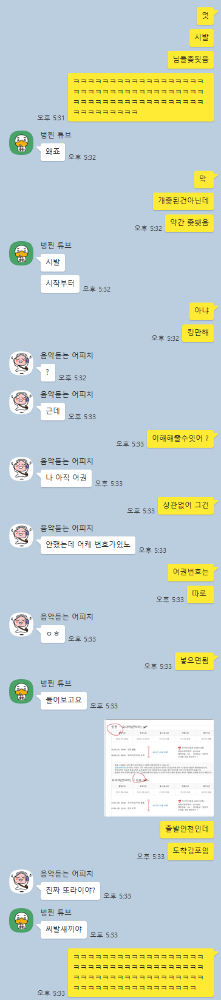

김포 주차 힘들어
엇 난 이거ㅜ일부러 이렇게 끊기도 하는데 ㅋㅋㅋ
벙찐 튜브ㅋㅋㅋㅋㅋㅋㅋㅋ
입국할때 김포공항 터미널 작아서 인천보단 덜 걸어도 되고 사람도 별로 없어서 좋던데
지방러면 김포->인천공항 후 버스 끊어야됨ㅋㅋ
김포-서울역이 더 빠를텐떼 굳이.?
나 인천에서 도쿄 갈때 인천 1,2 터미널 헷갈려서 잘못갔다가 여유있게 도착하는 편이라 다행히 문제 없었고 도쿄 나리타에서도 터미널 헷갈림 ㅋㅋㅋㅋ
왜 문제지? 오히려 좋은거 아닌가? 출발도 김공에서 하고 싶었나보다
주차를 인공에 해서 그런 거 아닐까
김공이라니.... 포티냄새
?? 그럼 뭐라해야 영크크임?
근래의 젊은 우리 同年輩들은 金浦공항이라고 부른다네 銘心하게나 젊은親舊
개씹억진데
쟤는 중공이라서 그래 이해해
김해 아닌게 어뎌
나는 김포가 더좋던데
인천에서 김포 가는 항공편이라는 줄 알았네. ㅋㅋㅋㅋ
진짜 또라이야? (순수하게 물어보는것 서울놈이라 괜찮음)
씨발새끼야 (지방러 좆됐음)
저게 새벽비행기에 차 타고 움직여서 택시 타야 하는 번거로움이 생길 수도 있어서 저러지 않을까 싶음 ㅋㅋ
김해 아닌게 어디야
ㅋㅋㅋㅋㅋㅋㅋㅋㅋ김해아니잖아 한잔해
분리발권인게 더 문제일것같은디
저정도는 추억으로 커버 됨
주차는 그렇게 풀수도 있겠구나 ㅋㅋㅋㅋ